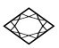
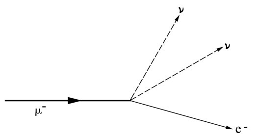
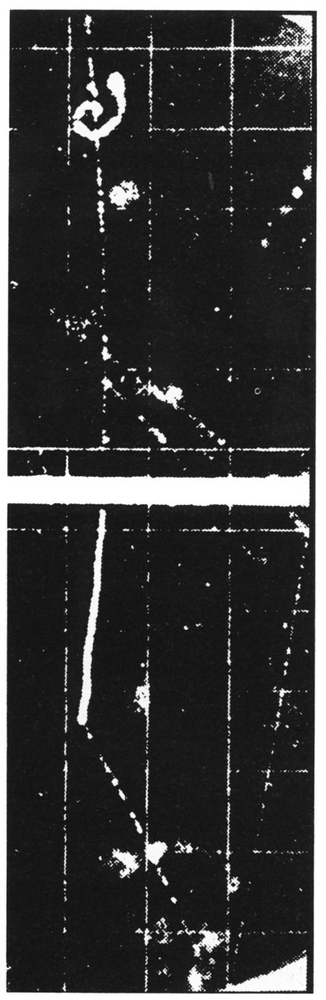
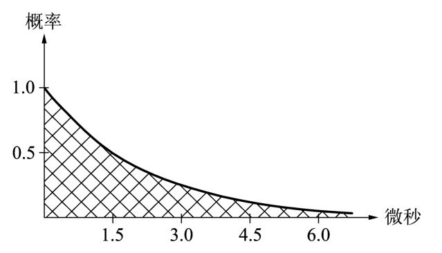
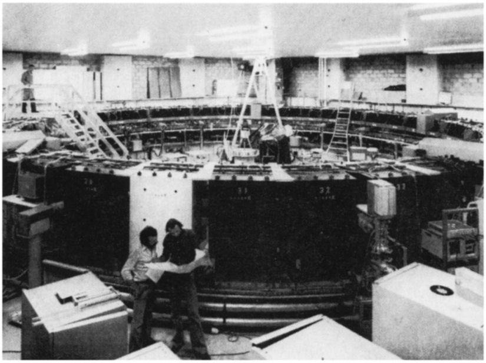
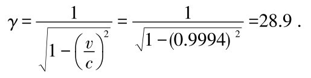
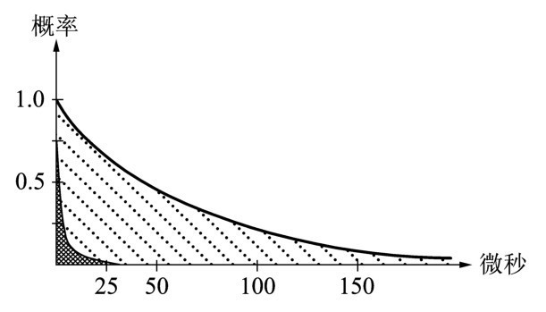

第十章次日上午，我从家里直接赶往克拉姆小巷。爱因斯坦已经到了那里。几分钟后，牛顿顺着螺旋状的楼梯爬了上来。
令人惊奇的是，他显得兴致很高，愉快地同爱因斯坦寒暄。
牛顿： 我亲爱的爱因斯坦，你也许正瞧着一个睡眠不佳的人，但是此人现在能够有把握地说他至少已经理解了你的理论的基本思想。因此，让我们郑重地开始上午的聚会吧。我必须承认，有几个问题仍在困扰着我。
我们在爱因斯坦的客厅坐下来，尽情享受简朴家具带给人的舒适和安逸。
牛顿： 毫无疑问，我们昨天的讨论会是我所参加过的最有趣的科学聚会之一。我感到吃惊的是，你当初如何从一个简单原理——已被实验证明了的光速普适性原理——出发来建立起你的相对论的整体结构。昨天讨论的要点，即时间延缓，是这一结构的最重要组成部分之一，也许就是最重要的部分。
然而，物理学是一门实验科学。即便是最精巧的理论体系，只要有一个实验结果不能证实它的预言，这个理论体系也将坍塌。我现在请教你们二位：如今有什么实验检验了相对论？它和我的力学固然没有直接冲突，但是前者在物体做极快速运动的情况下或多或少地扩展了后者。相对论已经完全被实验证明了吗？如果是这样的，亲爱的爱因斯坦，那我就太高兴了，因为我目前看不出解决光速的普适性所带来的难题的任何其他途径。
爱因斯坦： 我第一篇关于相对论的论文的确含有很多思辨的成分。但不久结果就表明我的那些想法其实可以毫无矛盾地发展起来。创立一个相对论性的力学新版本是可能的，从而使我们获得快速运动物体的动力学的自洽图像。
我拿不准最近的实验检验结果究竟如何。自从回到伯尔尼，我一直试图获得最新信息，但我时间太少，无法完全做到这一点。据我所知，没有任何实验同相对论矛盾。不过我们有位专家就在这里。哈勒尔，你是我们奥林匹亚学会的成员，我恳请你帮助我们。
哈勒尔： 艾萨克爵士，我首先应该强调的是，到目前为止我们只讨论了爱因斯坦理论的几个方面，其中之一是时间延缓。依我看，相对论的一个更重要的方面还有待研究，我们稍后将予以探讨。而眼下我只对时间延缓的有关研究略加评述。
我们该如何测量时间延缓呢？原则上，我们只须观测时钟在快速运动的载体，比如火箭上的运行。然而，怎样才能获得我们需要的极高速度呢？要想获取可测量效应，载体的运动速度应该接近光速。即便借助于所有可自由支配的技术手段，人们今天依然无法将一个宏观物体加速到如此高的速度。
爱因斯坦： 当然，时间延缓效应的确存在于所有运动的时钟之中；但在相对低速的情况下，这种效应其实并不显著。倘若可以获得极其精确的时钟，我们或许能够以今天火箭所达到的比较适中的速度来测量时间延缓。诸位以为如何？
哈勒尔： 能否以适中的速度，比如说每秒几十或几百千米，测量时间延缓，实际上依赖于人们用来做实验的时钟的精度。让我们暂时绕过与之相关的技术难题，但我向你们保证我们还将回到这些问题上来。让我们来思考怎样才能测量几乎以光速运动的物体的时间延缓效应。
虽然在普通实验室里面无法把宏观物体加速到如此高的速度，但是对于像质子和电子这样极微小的物体我们却能够做到。你甚至不必亲临实验室，大自然为我们提供了丰富的快速运动的粒子。
牛顿： 好吧，假设我们观测一个快速运动的粒子，比如你提到的电子。你将如何在电子的系统里测量时间呢？你总不能把时钟捆在电子的脖子上吧。
哈勒尔： 当然不需要那样做。有一个诀窍可以避免上述难题。我们不采用电子，而使用具有内置时钟的粒子做实验。假设我们观察这样一个粒子，它恰好1秒钟之后通过某种固有的方式衰变，比如弱核相互作用的方式。
爱因斯坦 （持怀疑态度）：我们的宇宙中存在这样的粒子吗？
哈勒尔： 自然界存在很多不稳定粒子，它们产生之后不久就衰变掉了。不错，并不存在寿命严格为1秒的粒子——这里旨在诠释原理。
现在来观察一个寿命为1秒的粒子，它相对于我们静止。所发生的过程很明确：1秒整之后粒子将衰变并产生几个次级粒子（secondary particle）——不必在意衰变过程的细节。
我们再来考虑另一个同类粒子，它相对于我们以速度v 运动。开始时v 取一个小值，但随后逐渐增大。只要v 相对于光速来说很小，我们仍将看到粒子在1秒钟后衰变。
这很容易测量。我们只须关注粒子从产生到衰变的径迹。径迹的长度就等于速度v 乘以粒子的寿命，即1秒钟。如果粒子的速度为1千米每秒，它将恰好行进1千米，然后衰变掉。
牛顿： 对不起，哈勒尔，我打断一下，我相信我知道你想说什么。如果我们加速该粒子，比如说使其速度达到100 000千米每秒或更高，时间延缓将开始显现，γ因子就变得重要了。那么在我们看来该粒子存活的时间比1秒钟要长。对于静止的观察者而言，它的寿命将等于1秒钟的γ倍。
哈勒尔： 完全正确！一个粒子从它产生出来的位置到它衰变的位置之间的径迹长度不单单由它的速度决定，而是由它的速度乘以γ因子给出。举个例子：假设粒子以相当于光速的99％的高速运动；也就是说，它的速度达到297 000千米每秒。如果不存在时间延缓，这个粒子将在空间穿行297 000千米，然后衰变掉。对于这样的速度，它的γ因子是很可观的——精确地说，γ=7。这意味着粒子穿越空间的距离7倍于297 000千米，即大约200万千米。自然，时间延缓与否的差异是巨大的。这种效应在实验中不可能看不到。
爱因斯坦： 我承认这是个非常有意思的试验，然而，你先前告诉我们说自然界并不存在寿命为1秒钟的粒子。因此你的试验其实无法以这种方式实现。我们应该怎么做呢？
哈勒尔： 一个切实可行的试验与上述方案相比仅仅稍有不同。今天我们知道存在一些粒子其实可以用来做这类实验。我只提一下有关试验中最为人所知且最令人难忘的一个，它采用的是μ子。μ子是一种特别像电子的粒子——你可以把它们看作电子的兄长，只不过体重较重而已。μ子的质量大约是电子质量的200倍。
爱因斯坦： 真不可思议！μ子似乎是很不寻常的粒子。你知道它们缘何存在吗？
哈勒尔： 没有人知道这一点。它们似乎像花园里的杂草一样毫无用途。况且μ子也不稳定，所以它们对宇宙中稳定物质的结构好像不起任何作用。
牛顿： 也许爱因斯坦从造物主那里特地订购了这些μ子，使得他能够令人信服地证明自己的相对论。事实上，假如我们可以借助μ子测量时间延缓的话，那它们就不是一点用处都没有。
爱因斯坦： 牛顿，如果我真的订购了什么，那么为了方便起见我宁愿订购的是哈勒尔的寿命为1秒的粒子。先生们，别再开玩笑了！讲讲μ子是如何衰变的吧。
我画了一幅μ子衰变的示意图。

图10.1 μ子衰变：这里一个带负电的μ子衰变成一个电子和两个中微子。中微子是电子与μ子的电中性伙伴。它们也许像光子一样没有质量，但这一点还没有得到实验证实。
哈勒尔： μ子在1937年被探测到，当时设计这种实验的目的是研究宇宙线（cosmic ray）。
牛顿： 对不起，宇宙线究竟是指什么？
哈勒尔： 快速运动的粒子始终在宇宙空间穿行，其中大部分是质子，即氢原子核，但也有一部分是其他元素——比如说氦，或者像碳或铁这样的重元素——的原子核。

图10.2 μ子衰变：这里一个带正电荷的μ子从上方穿过被称做云室的探测器。它的径迹在云室里是由微小的水滴形成的可见轨迹，类似于喷气式飞机在大气中飞行时机尾形成的径迹。μ子穿过一块铝板，在这一过程中它被减速并衰变成一个正电子（浅淡的径迹）和两个中微子（这里看不出来）。正电子是电子的携带正电荷的同类；或者更准确地说，它是电子的反粒子。
所有这些粒子通常以接近于光速的速度运动。当它们同外层大气中的原子核碰撞时，会发生轻微的爆炸。爆炸是由粒子间的反应所引发的，通常很复杂，因而我暂时不作详细讨论。总之，这些反应产生了μ子。μ子几乎是以光速飞离碰撞点，其中许多到达地球表面。我们的身体时刻受到这些粒子的轰击。它们常常击中并摧毁人体内的个别原子核。
爱因斯坦 （仔细看过我的草图）：根据你的草图，μ子衰变后生成了3个粒子。
哈勒尔： 是的，电子接受了μ子所携带的电荷；而其他两个粒子是电中性的，叫做中微子。探测中微子十分困难，因为它们实际上不与物质发生相互作用——当然也包括用于制作探测器的物质。
这就是在20世纪60年代初期之前μ子衰变的细节迟迟得不到解释的原因。我们的目的实际上不在于细节，重要的是我们能够观测μ子衰变。人们通过观测μ子释放出来的电子来测量μ子衰变。
现在转到μ子寿命究竟有多长的问题上来。有人已经证明，不可能确定一个精确的时间点，在那之后μ子必定会衰变掉。我们只能确定μ子衰变的概率——说得更准确点，是很多μ子的衰变概率。假设我们跟踪1000个同时产生且处于静止状态的μ子。我们将会发现，仅仅1.5微秒这么短的一段时间之后——也就是说，百万分之一点五秒之后——恰好半数的粒子，即500个μ子，已经衰变了。再过1.5微秒，半数剩余的μ子，即250个，将发生衰变。1.5微秒就被称做μ子的寿命。
如果知道了μ子的寿命，那就容易阐明它从产生开始作为时间的函数的存活概率。时间越长，概率越小。
我用一张纸画出了此函数的近似图（见图10.3）。

图10.3 这里把μ子的衰变概率绘制成了时间的函数：在1.5微秒之内，可以看出μ子的存活概率已经降低至50％。这段时间称做μ子的寿命（或半衰期）。再过1.5微秒之后，存活概率又减少一半，降至0.25。仅过10微秒后，存活概率其实已变得非常小了，在1％的量级。
哈勒尔： 你永远不可能有绝对把握声称在一定时间之后所有的μ子都已经衰变了。即便过了整整1小时，这与μ子的寿命相比其实算很漫长了，仍然会有一定的也许是微小的概率使得其中某个μ子，一个真正的玛士撒拉（Methuselah） [1] 存活下来。
爱因斯坦 （不耐烦地）：够了，够了，哈勒尔！牛顿和我都懂得概率的含义。我就是一点都搞不懂为什么会涉及概率呢？μ子为什么没有独一无二的寿命？我察觉这里有问题。我不明白μ子在衰变前掷骰子的理由。它们为何不在寿命到期之后就衰变掉？比方说1.5微秒之后它们寿终正寝——这与你假设的寿命为1秒的粒子的情形是一样的。
牛顿对爱因斯坦的后几句话报以微笑。
牛顿： 爱因斯坦先生，几天前我对相对论一无所知。我利用在剑桥的时间让自己对原子物理学有所了解，知道一切原子过程只能用概率来描述。这是原子理论，或者你也许愿意称之为量子理论的一个基本原理。原子理论于20世纪20年代发展起来，概率描述也许就像你的光速普适性原理一样基本而无可辩驳。顺便提一句，我亲爱的同事，我在一本书里读到你当时曾强烈地反对概率原理。据说你拒绝接受量子理论的措辞是：上帝从不掷骰子。说这话的爱因斯坦与那位于1905年把光子的概念引入物理学从而对量子理论的发展作出极其重要贡献的爱因斯坦是同一个人吗？
爱因斯坦： 牛顿，我无法轻易地接受概率表述。但由于你已经提及了可能是我说过的关于上帝的那句话——而我对此毫无非议——我现在再补充一点：μ子可以在任何时候以它喜欢的任何方式衰变，然而它并不掷骰子。自然规律是清晰明确的，并非模棱两可的。也许我们目前对这些问题的理解不允许我们提出比μ子衰变的概率描述更好的理论，但是有朝一日我们肯定能够对单个μ子的衰变做出精确的预言。
爱因斯坦的后几句评论使我越发感到不自在。讨论这样进行下去是危险的，我们三人会陷入有关量子理论基础的激烈争辩中去。毕竟在生命的最后几十年爱因斯坦自始至终反对今天已被广泛接受的量子理论的概率诠释。他与原子理论的创始人之一玻尔（Niels Bohr）的辩论已经成为当代物理学史的一部分。我试着调整讨论的方向。
哈勒尔： 先生们，我提到μ子衰变只是要举例说明时间延缓。无论如何，我无意煽动有关量子理论的争吵。我建议大家别纠缠于原子物理学与量子理论，回到我们最初关注的问题吧。我们唯一需要的是μ子的寿命，μ子衰变的概率表述是反映了这一量子过程的深层性质还是仅仅反映了我们对μ子内部行为的细节的无知，对此我们暂且不管。
牛顿表示赞成，爱因斯坦也点头同意。
牛顿： 不过，我希望以后有空我们再回过头来探讨量子理论的概率问题。其实，我对这一问题的兴趣更胜过对相对论中的时空问题的兴趣。
哈勒尔： 那好，回到μ子上来。只要我们检测许多μ子的衰变，便能轻而易举地确定它们的寿命；其数值就是我先前提到过的1.5微秒，此乃很短暂的时间。这意味着μ子是可以当时钟来用的粒子。我们最起码能够用它来测量1.5微秒的时间。顺便提一句，对于粒子物理学家来说，正好相反，1.5微秒可不能算是特别短暂，在这么一段时间内光传播了将近500米。如今我们有能力测量比μ子寿命小很多个数量级的时间间隔。
牛顿： 等一等！你早先不是说在地球表面可以发现许多由宇宙线撞击我们这个行星——或者更确切地说，撞击我们的大气层上层——而产生的μ子吗？你也说过μ子几乎像光那样快地运动。因而我们预期μ子在衰变之前大约在空间穿行500米。也许有些μ子能穿行2千米或3千米。但平均而言，它们的行程应该不超过1千米。好了，地球大气层可比1千米厚得多，怎么也有30千米吧，那么μ子是如何穿越大气层到达地球表面的呢？难道我们不能认为实际上所有μ子在穿越大气层上层的过程中早就衰变掉了吗？
牛顿猛然离开椅子，在地板上踱了一会儿步，然后拍拍爱因斯坦的肩膀。
牛顿： 爱因斯坦先生，我相信你赢了。到达地球表面这儿的μ子提供了证据。μ子穿行这么远当然不存在问题——是时间延缓使得它们的飞行距离比我们依其寿命所作的天真预测远得多。这一点类似于哈勒尔先前讨论过的假想粒子。
爱因斯坦 （转向我）：怎样定量地证明时间延缓呢？仅仅靠观测地球表面这儿的几个μ子，我们恐怕不能得出结论说相对论是正确的，尽管事情看起来有利于我，或者更确切地说，有利于相对论。
哈勒尔： 不过，牛顿的结论是合理的。对μ子来说，如果没有时间延缓的话，情况就显得糟糕了，它们就没什么机会到达地球表面。我们知道，大多数μ子产生于海平面上方约15千米处，若不存在时间延缓，半数μ子移动500米之后就会消失。容易推测，只有极少量μ子——大约十亿分之一——会到达地表。在地球表面附近发现μ子的机会是很少的。然而，那里存在很多μ子。解释该现象的唯一途径是，假设研究人员在地球表面所探测到的快速运动的μ子不如静止或低速运动的μ子那样衰老得快。时间延缓是关于这一现象唯一被广泛接受的解释。
爱因斯坦 （没有罢休）：那听起来很令人信服，但是相对论并非仅仅预言了运动系统中的时间延缓。毕竟，你可以精确计算延缓效应，它是速度或者γ因子的函数。然而，怎样做定量检验呢，比如说利用μ子衰变？恐怕宇宙辐射产生的μ子并不十分适合做实验吧。
哈勒尔： 不幸的是，我必须同意你的观点。好在我们并不是非依赖源于宇宙线的μ子不可。有许多核物理学与粒子物理学的实验室，在实验室中我们可以产生高强度的μ子束流。当然，产生这些束流的目的并非只是为了检验相对论。任何一位严肃的物理学家都不怀疑相对论的有效性。我们把μ子用于其他目的——比如说，用于确定原子核的内部结构。
1976年在CERN做了一个实验，以详细验证相对论的预言。通过粒子对撞而产生的μ子被立即导入环状真空管。它们运动得比较快，其速度大约是光速的99.94％。
与源于宇宙线的μ子相比，人工μ子的主要优点是我们确切地知道它们于何时何地产生并且以多快的速度运动。这使我们具备了精确地定量检验时间延缓的先决条件，从而验证相对论。磁场保证μ子以恒定的速度在环中运动；它们基本上被储存在那里，因而我们把这种设备称做储存环。

图10.4 在CERN用于详细研究时间延缓的储存环。μ子被储存在一个环状的真空管中，周围环绕着粒子计数器。这些粒子计数器借助于反应过程中所释放出的电子来记录衰变的μ子。
证明时间延缓是这一实验的副产品。该实验的主要目的在于精确测量μ子的磁性。（承蒙CERN惠允。）
牛顿： 可是，在这个实验里你怎样确定环中的μ子何时衰变呢？
哈勒尔： 这不成问题。储存环周围环绕着粒子探测器，它们能够记录从衰变的μ子产生出来的电子。实际上，所有这些电子都是在μ子衰变过程中横向发射出来的。它们离开储存环，并且总会飞过某个粒子计数器。
爱因斯坦： 通过这种途径测量时间延缓，真是太迷人了！仅仅记录电子数目随时间的变化，你就自动得到单位时间内μ子衰变的数目。如果储存环中μ子的数量足够大，你自然能够相当精确地测量时间延缓。哈勒尔，别卖关子了，在CERN到底有什么发现？
哈勒尔： 当我说今天人们没有任何理由怀疑相对论的时候，我就预料到了实验结果。不过我们首先了解一下强有力的事实。CERN的实验表明μ子的寿命为44微秒——大约是静止μ子寿命的30倍。
牛顿： 等等！约为30的这个因子也许就是γ因子。我们检验一下这是否正确。你说过储存环中的μ子速度是光速的0.9994倍，从而我们得到γ因子


图10.5 CERN观测到的μ子衰变概率（阴影部分），对应于44微秒的寿命。作为对照，交叉区域表示μ子在静止时的分布。如果不存在类似于时间延缓的现象，交叉区域将会被观测到。CERN的实验给出γ因子大约为29，与相对论的预言符合得极好。
先生们，对此还有什么话要说吗？
牛顿一会儿就算出了这个结果。
哈勒尔： 测量结果与相对论的预言精确相符，误差大约为0.2％。
牛顿看看爱因斯坦。爱因斯坦正开心地凝视着窗外。
牛顿： 爱因斯坦，如果CERN的物理学家观测到偏离相对论的结果，你会怎样？
爱因斯坦： 牛顿，我宁愿不回答这个问题。你自己刚才说过，看不出有其他解决光速恒定与普适性问题的方案。相对论显而易见不可能是错的。如果我们仁慈的上帝没有想出这一解决方案，我会替他感到非常惋惜的。
出自爱因斯坦之口的这番话听起来好笑，但绝非妄自尊大。三个奥林匹亚学会的成员全都放声大笑。几分钟后，克拉姆小巷中毫无疑心的过路人也许会看见三位绅士高谈阔论地走出49号寓所，奔向熊苑广场附近的一家小酒吧，去消磨近午的时光。
注解：
[1] 《圣经》中记载的长寿者。——译者